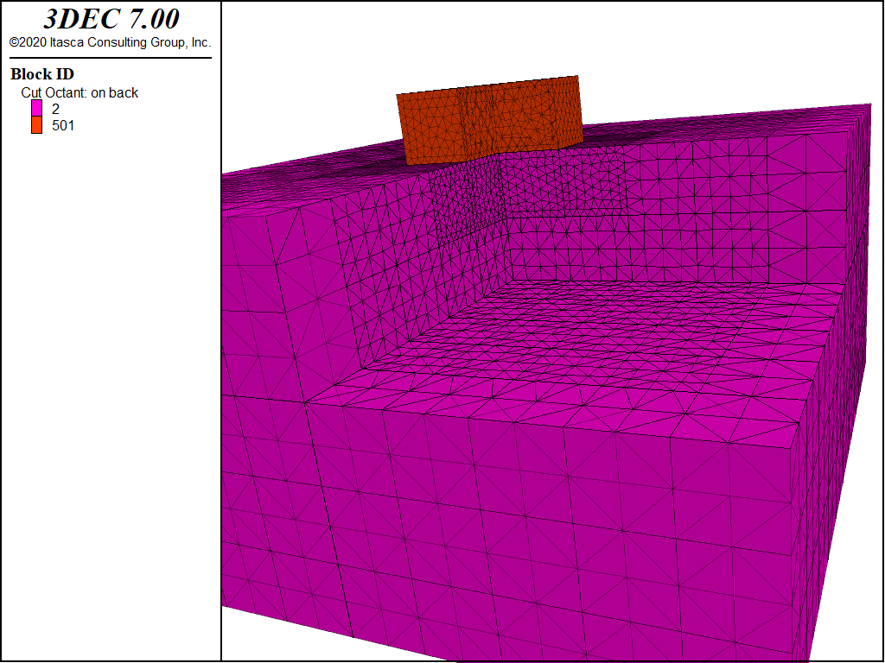
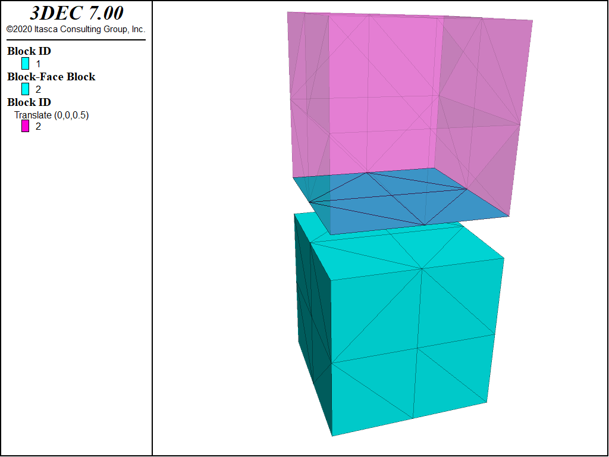
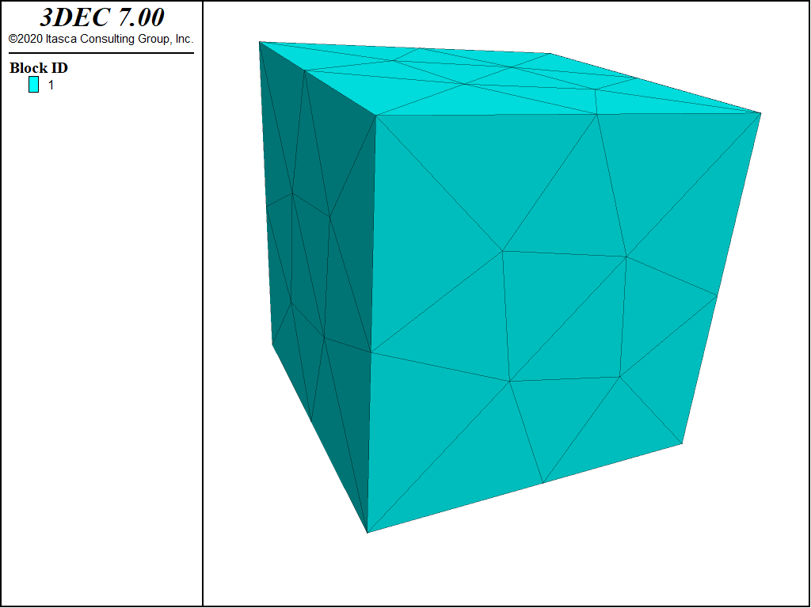
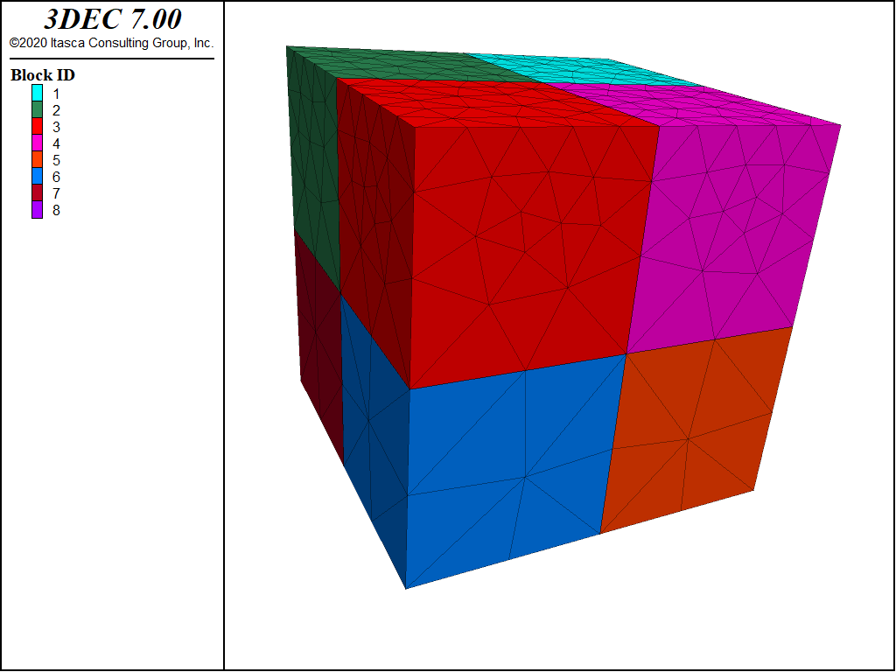
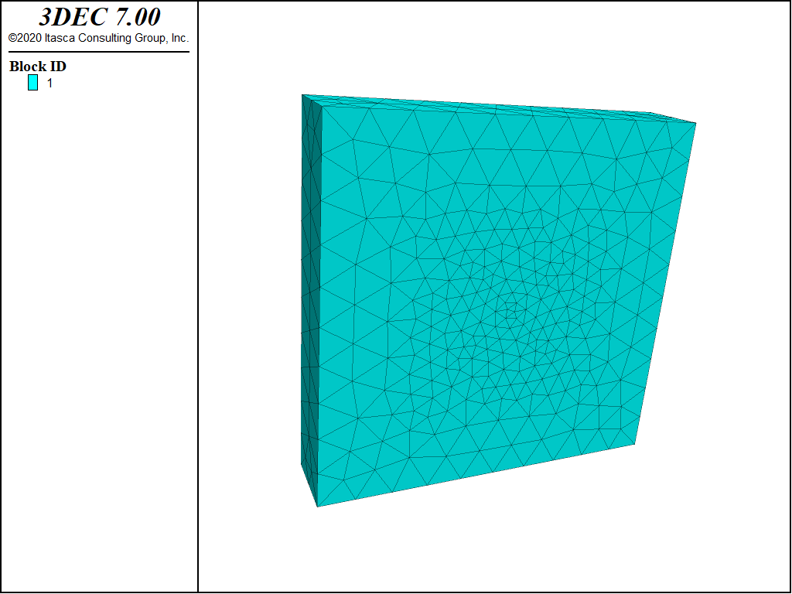
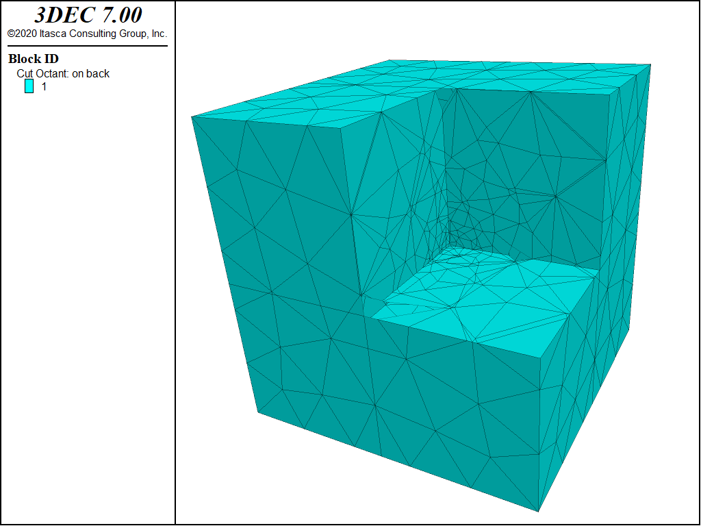
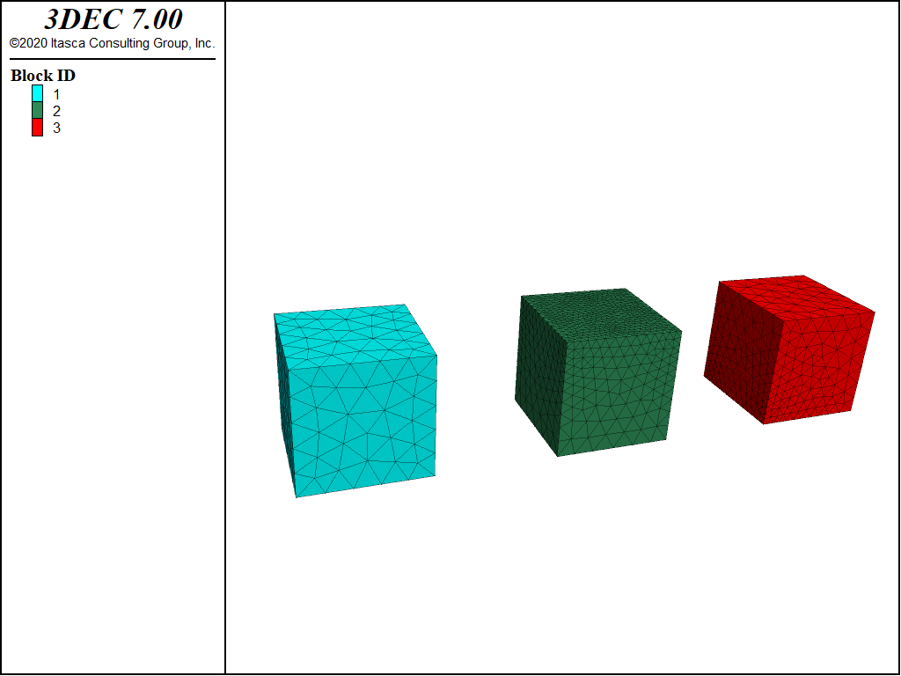

生成网格单元
3DEC 中的网格单元通常通过命令生成。基本命令通常能够将任意块体集合划分为四面体网格。网格生成功能相当稳健，但存在一些不足，包括控制手段不足，以及某些情况下生成缓慢。7 版增加了一种新的试验性方法，以解决其中一些问题。下面介绍这两种方法。
此外，7 版还增加了从其他网格生成程序（例如 Griddle）导入网格单元的能力，详见导入与合并 #importingandmerging文档。
通过命令生成网格单元
生成四面体网格单元的基本命令为 按边长生成区块单元命令（block zone generate edgelength）。可以为不同块体指定不同边长。每个块体内部的边长必须保持一致。如果需要在单个块体内部渐变网格单元尺寸，需将该块体切成较小块体并连接，或使用新的网格划分算法（新的网格划分命令 #zonegeneration-new）。
只有为所有块体指定边长后，才会生成网格单元。生成网格单元后，还会创建子接触。随后可为网格单元和接触赋予本构模型与属性。
下例展示如何在关注区域附近生成较小网格单元（此处关注区域为地表施加荷载处）。
model new
block create brick -20 20 -20 20 -20 0
block densify seg 10 10 5 join
block create brick -4 4 -4 4 0 4
block zone generate edgelength 0.5 range pos-x -8 8 pos-y -8 8 pos-z -4 4
; 对已经指定边长的区域再次定义边长，
; 不会覆盖先前指定的边长。
block zone generate edgelength 1 range pos-x -16 16 pos-y -16 16 pos-z -8 0
block zone generate edgelength 2


图 1：不同块体采用不同边长的网格划分示例。
如图 1（Figure 1） 所示，可保证节理两侧的网格点匹配。这可减小跨节理边界的应力不连续性。对于几何形状很差的块体，部分块体可能无法生成网格。此时可以使用 alternate 放宽约束，允许面两侧的网格点不匹配。注意，这会在这些边界处产生应力集中。
虽然节理两侧的网格点始终匹配，但面不一定匹配。可能出现网格点匹配而面不匹配的情况（见图 2（Figure 2））。因此，建议每个方向上至少设置两个网格单元（见图 3（Figure 3））。也可采用新的网格单元生成算法（新的网格划分命令 #zonegeneration-new），它始终保证网格点和面都匹配。



图 3：块体各尺寸方向上至少有两个网格单元时，面匹配的示例。
使用 按中心点生成区块单元命令（block zone generate center） 命令也有助于大型模型分析，该命令是 按边长生成区块单元命令（block zone generate edgelength） 命令的一种变体。它允许四面体网格单元尺寸从中心点向外逐渐增大。不过，每个块体内部仍必须采用恒定网格单元尺寸。该命令与 创建隧道区块命令（block create tunnel） 命令配合使用时尤其有用。
新的网格划分命令
7 版增加了新的网格划分算法，以解决上述部分不足。可通过 block zone generate-new 命令调用这些算法。通常先使用 block zone size 命令，在划分网格之前指定模型不同部分所需的网格单元尺寸。与 按边长生成区块单元命令（block zone generate edgelength） 命令不同，block zone generate-new 命令只能发出一次。网格单元尺寸可通过该命令中的关键字指定，也可预先通过 block zone size 命令指定。下面给出示例。
使用 block zone generate-new，可以指定整个模型的全局参数，例如网格单元尺寸范围（max-edge、min-edge）和渐变（gradation-surface、gradation-volume）。默认网格单元尺寸为模型对角线长度的十分之一，如下例所示。
block create brick 0 1
block zone generate-new

仅设置 max-edge 或 min-edge，即可设置整个模型的平均边长：
block create brick 0 1
block zone generate-new max-edge 0.5


图 5：使用新网格划分算法，将 1x1x1 m 块体的边长指定为 0.5 后的网格划分。
block zone size 命令用于指定“局部”网格单元尺寸。可以为模型不同部分指定不同尺寸。注意，与 :kwd:block.zone.generate.edgelength` 命令不同，如果对同一范围多次发出 block zone size 命令，则以最后一次为准。这与其他所有 3DEC 命令的工作方式一致。还要注意，如下图所示，节理边界两侧的网格点和面都将匹配。
block create brick 0 1
block densify segment 2
block zone size edge 0.1 range pos-z 0.5 1
block zone size edge 0.3 range pos-z 0 0.5
block zone generate-new min-edge 0.1 max-edge 0.3


图 6：在不同区域采用不同网格单元尺寸，对块体划分网格。
与 block zone generate 命令类似，网格单元尺寸可从中心向外逐渐增大，如图所示。不过，与 按中心点生成区块单元命令（block zone generate center） 命令不同，不需要将模型分成独立块体。网格单元尺寸可以在单个块体内部变化，如下所示：
block create brick -5 5 -1 1 -5 5
block zone size center 0,0,0 distance-1 0 edge-1 0.1 distance-2 5 edge-2 1
block zone generate-new min-edge 0.1 max-edge 1


图 7：网格单元尺寸从中心向外增大的块体网格划分（显示剖面）。
还可以使用 isolated-point 关键字，指定某个网格点附近的网格单元尺寸，如图所示。gradient-surface 关键字规定表面网格单元尺寸随远离指定点而增大的速率。数值越大，渐变越快。
block create brick 0 1
block zone size isolated-point 0 0 0 edge 0.01
block zone generate-new min-edge 0.01 max-edge 0.2 grad-surface 0.5

如果指定块体内部的点（不是网格点），同样适用。
block create brick 0 1
block zone size isolated-point 0.5 0.5 0.5 edge 0.01
block zone generate-new min-edge 0.01 max-edge 0.2 grad-surface 0.5


图 9：在块体内部某个位置指定网格单元尺寸的块体网格划分。
block zone size 命令的行为，取决于范围中 by 关键字之后的元素类型：
by block-gridpoint：为范围内的网格点指定网格单元尺寸；by block-face：为范围内的面指定网格单元尺寸；by block：为范围内的块体内部指定网格单元尺寸（未指定元素类型时，此为默认设置）。
下面给出一个示例。
block create brick 0 1
block create brick 2 3 0 1 0 1
block create brick 4 5 0 1 0 1
; 第一个块体的网格单元尺寸均匀，均为 0.2
block zone size edge 0.2 range pos-x 0 1
; 第二个块体顶部表面附近的网格单元尺寸设为 0.05
block zone size edge 0.05 range pos-x 2 3 pos-z 1 by block-face
; 第三个块体左下角附近的网格单元尺寸设为 0.05
block zone size edge 0.05 range pos-x 4 pos-z 0 by block-gridpoint
;现在设置整个模型的网格单元尺寸范围
block zone generate-new min-edge 0.05 max-edge 0.2


图 10：指定网格单元尺寸的不同方式示例。
| 这些内容对您有帮助吗？… | FLAC3D © 2019, Itasca | 原文更新于 2020 年 10 月 8 日 |